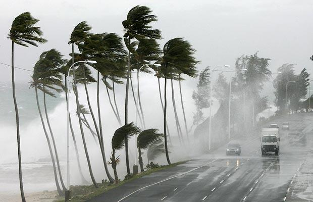
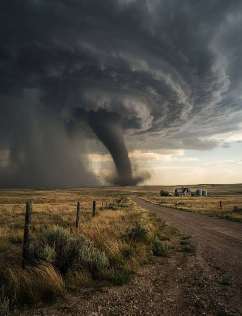

แหล่งรวบรวมข้อมูลจำแนกประเภทพายุ เหตุการณ์สำคัญในประวัติศาสตร์ไทย พร้อมแผนที่ปักหมุดตำแหน่งพายุ
พายุ (Storm) คือ สภาวะบรรยากาศที่เกิดความแปรปรวนอย่างรุนแรง เกิดขึ้นเมื่อมีความแตกต่างของอุณหภูมิและความกดอากาศในแต่ละพื้นที่อย่างมาก มวลอากาศจึงเคลื่อนที่เข้าหากันด้วยความเร็วสูงเพื่อปรับสมดุลความร้อนของโลก
กระบวนการดังกล่าวทำให้อากาศร้อนชื้นลอยตัวขึ้นสู่เบื้องบนอย่างรวดเร็ว เกิดการกลั่นตัวเป็นเมฆฝนขนาดใหญ่ และก่อให้เกิดสภาพอากาศที่รุนแรง เช่น ลมพัดแรงจัด ฝนตกหนัก ฟ้าแลบ ฟ้าผ่า และลูกเห็บตก
จำแนกออกเป็น 3 ประเภทหลัก พร้อมข้อมูลเหตุการณ์จริงในประวัติศาสตร์ไทย:

พายุหมุนขนาดใหญ่ที่ส่งผลกระทบต่อประเทศไทย พร้อมตัวอย่างเหตุการณ์สำคัญ:
เกิดจากสภาพอากาศร้อนชื้น มักเกิดในช่วงเปลี่ยนฤดู:

พายุหมุนเกลียวขนาดเล็กที่ยื่นลงมาจากฐานเมฆสู่ผิวน้ำหรือพื้นดิน:
แสดงตำแหน่งมาร์คจุดเหตุการณ์พายุสำคัญในประวัติศาสตร์ไทย คลิกที่หมุดแต่ละจุดเพื่อดูรายละเอียด: